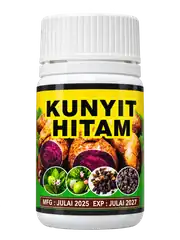

PEMBUNGKUSAN KONSEPKISAH KAMI
Warisan Keluarga dalam Setiap Langkah
TGPU Legacy diilhamkan oleh nilai keluarga, warisan dan penghargaan terhadap alam. Kami meneroka kesejahteraan semula jadi, dibina selangkah demi selangkah dengan teliti dan ikhlas, sambil berkongsi maklumat bahan yang jelas untuk komuniti.
TGPU bermaksud Tok Guru Pulau Ubi. Pendidikan kekal sebagai teras warisan keluarga kami.
Langkah Kecil,
Manfaat Berpanjangan
PendidikanWarisan Kita,
Keluarga Kita,
Masa Depan Kita